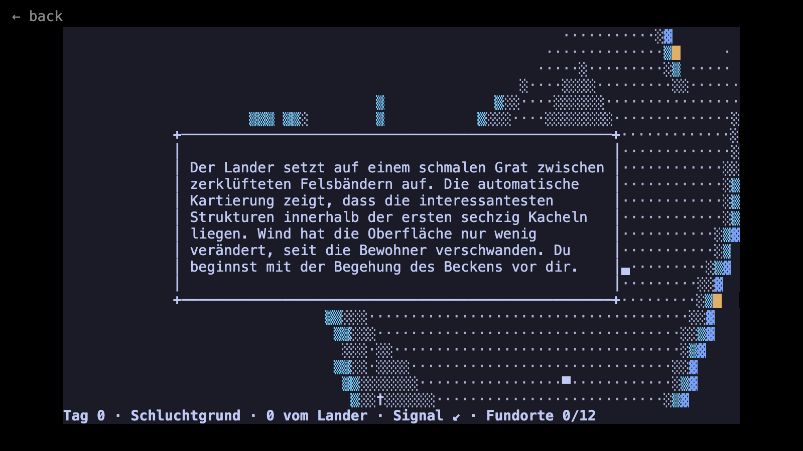

Apocalypse Year
Completion ▰▱▱▱▱▱▱▱▱▱ 10% · a concept with 3 of 365 planets
Apocalypse Year is my attempt at a small daily ritual: one planet per day of the year, each one a world whose inhabitants are gone, and you walk it to work out why. It is a terminal game written in Go on top of tcell.
I have a list of 365 sentences, each one a reason a planet might have become empty and lonely. Every day the game opens the planet for one of them. You land, walk an endless procedural surface, and find between 5 and 15 places worth investigating near the lander. Each one gives you a short piece of German prose with a concrete fact about what happened. Put together, the facts are enough to guess the reason.
Nothing threatens you. No combat, no inventory, no timer, no way to fail. Deduction happens in your head; the game never asks for your theory. When you leave, you can run an "AI Analysis" that just prints the reason, word for word.
The planet texts are written offline by an LLM and committed to the repo as rec-files. The game itself has no API key and no network, so the browser version is exactly the same game. Only the journal is different: in the browser it lives in memory and is gone when you close the tab.
Controls: arrows, hjkl or the numpad to walk, E to investigate, ? for help, Q or Esc to leave the planet.
Features
- One planet per day, past days replayable, future days locked
- Infinite noise-based terrain, regenerated from a seed, with structures stamped in near the lander
- Terrain bands that can block movement or sight, each with its own German name
- Colour themes taken from real terminal colour schemes (Gogh)
- A compass signal and a counter for the places you have found
- All content embedded in one binary, no network at play time
Under the hood
The whole locking rule for days is one line (ui/journal.go): you can play everything up to today, plus anything you already visited.
func (j *Journal) Unlocked(index, count int) bool {
return index <= j.CurrentIndex(count) || j.Visited(index)
}Is it a real game?
Concept. The loop works: land, walk, investigate, leave, read the reason. But only three planets are authored so far, so after three days there is nothing new.
Screenshots
